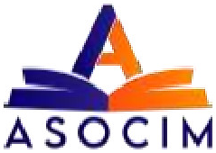

Yo, {{estudiante_nombre}}, titular de la cédula de identidad No. {{estudiante_cedula}}, en lo sucesivo denominado EL ESTUDIANTE/REPRESENTANTE, declaro formalizar el contrato de servicio educativo privado con ACADEMIC & SOCIOCULTURAL INSTITUTE OF MODERN LANGUAGES ASOCIM, C.A., RIF: J-50207138-5, en lo sucesivo denominada LA INSTITUCIÓN. El programa tendrá una duración de {{meses_texto}} ({{meses}}) meses, y su precio total debe ser cancelado íntegramente de acuerdo a la forma y términos de pago establecidos por la institución. Por medio de este documento, en pleno uso de mis facultades, suscribo y ME COMPROMETO, a regirme por los siguientes términos y condiciones de pago:
CLÁUSULA 1: OBJETO Y PRECIO DEL SERVICIO
EL ESTUDIANTE/REPRESENTANTE adquiere un compromiso mercantil con LA INSTITUCIÓN por la prestación de un servicio educativo. El precio total de $ {{precio_curso}} será cancelado mediante las cuotas mensuales establecidas de ${{cuota_mensual}} dólares americanos o su equivalente en Bolívares (Bs.) a la tasa oficial del Banco Central de Venezuela (BCV). Este monto no incluye el arancel de inscripción de {{inscripcion}}$, las actividades acreditables extemporáneas, constancias ni los gastos administrativos de grado, los cuales serán facturados por separado.
CLÁUSULA 2: FORMA Y TÉRMINO DE PAGO
El Precio Total del Curso podrá ser cancelado por EL ESTUDIANTE/REPRESENTANTE de la siguiente manera:
A. Pago de Contado: Mediante el pago total del curso al inicio del mismo.
B. Pago Fraccionado Mensual: En cuotas mensuales, a opción de EL ESTUDIANTE/REPRESENTANTE, con las siguientes modalidades:
1. Una (1) Cuota: Con vencimiento los días treinta (30) de cada mes.
2. Dos (2) Cuotas: Con vencimiento los días quince (15) y treinta (30) de cada mes.
3. Cuatro (4) Cuotas: Con vencimiento los días viernes de cada mes, de conformidad con el calendario vigente de LA INSTITUCIÓN.
CLÁUSULA 3: PLAZO DE GRACIA Y RECARGO POR MORA
Una vez cumplida la fecha de vencimiento de la respectiva cuota o mensualidad, EL ESTUDIANTE/REPRESENTANTE dispondrá de un Plazo de Gracia de cinco (5) días continuos para realizar el pago correspondiente sin que se generen intereses de mora. En caso de que EL ESTUDIANTE/REPRESENTANTE incumpla con el pago de la cuota dentro del lapso
establecido (incluido el Plazo de Gracia), se generará automáticamente un recargo por mora equivalente a {{mora_palabras}} ($ {{mora}}). Dicho monto será pagadero en Bolívares (Bs.) a la tasa de cambio oficial publicada por el Banco Central de Venezuela (BCV) para la fecha efectiva del pago.
CLÁUSULA 4: MÉTODOS Y PROCEDIMIENTO DE PAGO
EL ESTUDIANTE/REPRESENTANTE podrá realizar el pago del curso utilizando cualquiera de los siguientes métodos:
A. Pago Presencial en la Sede Administrativa
El pago puede efectuarse directamente en la taquilla administrativa de la sede de LA INSTITUCIÓN mediante los siguientes instrumentos:
1. Punto de Venta: Pago con tarjeta de débito o crédito nacional.
2. Efectivo: Consignación de efectivo en Bolívares (Bs.) o Divisas (dólares americanos).
B. Pagos Electrónicos Nacionales (Bolívares)
Los pagos mediante transferencia bancaria y Pago Móvil se realizarán exclusivamente a la tasa de cambio oficial del Banco Central de Venezuela (BCV) vigente para la fecha de la operación, y deben ser efectuados a los siguientes datos:
| Método | Banco | Tipo de Cuenta | Número de Cuenta | RIF del Beneficiario |
|---|---|---|---|---|
| Transferencia Bancaria | Banco Nacional de Crédito (BNC) | Cuenta Corriente | 0191-0080-46-2180200141 | J-50207138-5 |
| Pago Móvil | Banco Nacional de Crédito (BNC) | NA | 0424-3598339 | J-50207138-5 |
| Beneficiario | ACADEMIC & SOCIOCULTURAL INSTITUTE OF MODERN LANGUAGES ASOCIM C.A. | |||
C. Pagos en Divisas (Internacionales):
• Plataforma: Zelle
• Nombre del Titular: Catherine Sánchez
• Correo Electrónico: cathysanchez78@hotmail.com
• Paypal: casare78@gmail.com
D. Reporte y Actualización del Pago
EL ESTUDIANTE/REPRESENTANTE tiene la obligación de reportar de manera inmediata cualquier pago realizado por vía electrónica (transferencia, Pago Móvil o Zelle) enviando el comprobante correspondiente al número telefónico 0424-3598339. El reporte de pagos debe efectuarse dentro del horario laboral de LA INSTITUCIÓN, comprendido de lunes a sábado entre las 8:00 a.m. y las 4:30 p.m. (Hora de Venezuela).
Parágrafo Único: En caso de que el pago en Bolívares no sea reportado y verificado dentro del horario laboral del mismo día de la operación, LA INSTITUCIÓN procederá a actualizar el monto aplicando la tasa BCV vigente del día y la hora efectiva de su reporte y verificación, asumiendo EL ESTUDIANTE/REPRESENTANTE cualquier diferencia que pudiera resultar de dicha actualización.
CLÁUSULA 5: SUSPENSIÓN TEMPORAL (CONGELACIÓN) DE ESTUDIOS
5.1. Naturaleza del Plan de Pago: El monto acordado en el presente contrato corresponde al valor total e integral del programa de inglés. Para facilidad de EL ESTUDIANTE/REPRESENTANTE, dicho monto ha sido dividido en cuotas mensuales de financiamiento. En consecuencia, el compromiso de pago es continuo e ininterrumpido hasta saldar la totalidad del costo del programa, independientemente del ritmo de asistencia o avance académico.
5.2. Calendario Académico Continuo: Las actividades académicas se imparten los doce (12) meses del año. El mes de agosto y los períodos vacacionales escolares no constituyen meses libres ni eximen del pago correspondiente; por ende, las cuotas mensuales deben cancelarse puntualmente conforme al cronograma establecido.
5.3. Solicitud de Congelación Académica: Si EL ESTUDIANTE/REPRESENTANTE requiere suspender temporalmente sus clases por cualquier circunstancia personal o vacacional, deberá notificarlo formalmente por escrito a la Dirección de Administración. La congelación únicamente pausa el avance académico, no la obligación de pago. EL ESTUDIANTE/REPRESENTANTE deberá mantenerse al día con sus cuotas mensuales fijadas en el plan de financiamiento inicial.
5.4. Reincorporación y Extensión de Estudios: Al congelar el curso, la institución garantiza a EL ESTUDIANTE el derecho de reincorporarse a sus clases en el momento en que sus condiciones se lo permitan, sujeto a la disponibilidad de grupos y niveles, bajo las siguientes condiciones:
Estar al día con los pagos: Para efectivizar la reincorporación a clases, EL ESTUDIANTE/REPRESENTANTE deberá estar al día con las cuotas del plan de financiamiento.
Garantía de precio total sin cargos extra: Si debido a la suspensión el tiempo total de estudio se extiende más allá del plazo proyectado originalmente, una vez que EL ESTUDIANTE/REPRESENTANTE haya completado el pago del costo total del programa, no tendrá que realizar ningún pago adicional ni abonar cuotas extras, manteniendo su derecho a cursar los módulos pendientes hasta culminar su formación.
5.5. Reprobación de Nivel o Módulo: El plan de financiamiento original cubre cursar cada nivel o módulo del programa una sola vez. En caso de que EL ESTUDIANTE no alcance la nota mínima de aprobación requerida y deba cursar nuevamente un nivel o módulo (reprobación), dicho cursado extraordinario no está incluido en el precio total inicial. En este supuesto, EL ESTUDIANTE/REPRESENTANTE deberá realizar un pago adicional equivalente al valor de la mensualidad o costo del módulo vigente al momento de su repetición para poder cursarlo de nuevo.
5.6. Rescisión del Contrato: En caso de que EL ESTUDIANTE/REPRESENTANTE decida no continuar con el programa y prefiera no mantener la congelación, podrá solicitar la rescisión formal y definitiva del contrato mediante notificación escrita a la Dirección de Administración. La rescisión detendrá la generación de cuotas mensuales futuras a partir de la fecha de su aprobación formal; no obstante, el estudiante perderá el derecho a retomar o cursar los módulos pendientes y la institución no realizará reembolso de las cuotas o importes abonados con anterioridad.
CLÁUSULA 6: INCUMPLIMIENTO Y SUSPENSIÓN ACADÉMICA
El incumplimiento de la obligación de pago, una vez vencido el Plazo de Gracia y generados los recargos por mora, facultará a LA INSTITUCIÓN para emitir una Notificación de Cobro y Requerimiento de Pago (aviso de cobro) a EL ESTUDIANTE/REPRESENTANTE. La falta de pago efectivo tras la referida notificación tendrá como consecuencia la suspensión inmediata de EL ESTUDIANTE del programa académico. Mientras persista la insolvencia administrativa, EL ESTUDIANTE quedará inhabilitado para:
1. Acceder a las aulas o plataformas virtuales.
2. Continuar el proceso de formación.
3. Presentar exámenes/proyectos de fin de lapso.
4. Optar a la graduación o a la certificación del programa.
5. Asistir a eventos, talleres o actividades especiales de LA INSTITUCIÓN
Los derechos y el acceso al programa se restablecerán inmediatamente una vez que EL ESTUDIANTE/REPRESENTANTE haya cancelado la totalidad de los montos adeudados y obtenido la Solvencia Administrativa correspondiente de LA INSTITUCIÓN.
CLÁUSULA 7: VARIACIÓN DE LAS OBLIGACIONES POR DESEMPEÑO ACADÉMICO
En el supuesto de que EL ESTUDIANTE deba repetir alguna asignatura, nivel, o se produzca un atraso en su prosecución académica, las cuotas correspondientes a dichos meses o períodos de extensión serán recalculadas conforme al precio vigente y anexadas al presente Convenio mediante la suscripción de la Adenda correspondiente.
CLÁUSULA 8: MODIFICACIÓN DE DESCUENTOS Y/O BENEFICIOS
Al momento de generarse la segunda recarga por morosidad debido al incumplimiento reiterativo del compromiso de pago, a EL ESTUDIANTE/REPRESENTANTE le serán suspendidos los descuentos y/o beneficios otorgados en cualquiera de sus modalidades.
CLÁUSULA 9: MODIFICACIÓN DEL PRECIO Y MECANISMO DE ADENDA
Cualquier incremento o modificación en el monto de las cuotas o mensualidades del programa académico será notificado a EL ESTUDIANTE/REPRESENTANTE y se incorporará al presente acuerdo mediante la suscripción de una Adenda que formará parte integral de este Convenio.
CLÁUSULA 10: ACEPTACIÓN Y COMPROMISO
EL ESTUDIANTE/REPRESENTANTE declara expresamente que ha leído, entendido y acepta en todas y cada una de sus partes el contenido del presente Convenio de Pago, y se compromete formalmente con el cumplimiento de todas las obligaciones aquí estipuladas.
Valor de la Inscripcion: {{inscripcion}}$
Descuento 1.ª Cuota: {{descuento_primera}}%
Modalidad de Pago Elegida: {{modalidad}}
CIERRE Y FIRMAS
En la ciudad de Maracay, a los {{fecha_dia}} días del mes de {{fecha_mes}} del año {{fecha_anio}}
| ESTUDIANTE/REPRESENTANTE | POR ASOCIM C.A |
|---|---|
| {{estudiante_nombre}} {{estudiante_cedula}} {{estudiante_telefono}} Firma |
{{staff_nombre}} Firma y Sello Dir. Ventas |
ANEXO ÚNICO: CONTROL MANUAL DE PAGOS
Este anexo complementa el Convenio de Pago y sirve como registro digital de la modalidad de pago elegida por EL ESTUDIANTE/REPRESENTANTE y la consecuente imputación de los pagos recibidos, en consonancia con la Cláusula 2 (Forma y Término de Pago).
Modalidad de Pago Elegida: {{modalidad}}.
| N.º Mes | Mes | Año | Modalidad del Pago del Mes (Cuotas) | Firma/Sello Admón. |
|---|---|---|---|---|
| {{n}} | {{mes}} | {{anio}} | {{modalidad_mes}} |